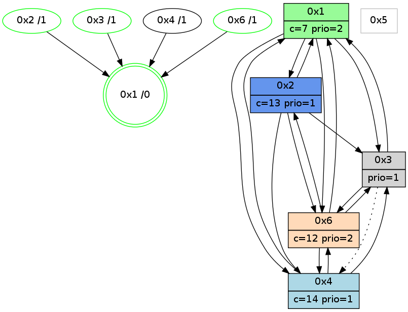

>> << IDX [start] -100 -25 -5 +0 +5 +25 +100 [1000.11346912]
 Previous packets
----------------------------------------------------------------------
995.192391 beacon01(adaf) #0 coord=01,02,05,03,04,06 cycle=432.0ms assoc
-- color-indic=1 64 22 be
995.202352 beacon02(adaf) #0 coord=01,02,05,03,04,06 cycle=432.0ms assoc 64 73 41
995.212353 beacon05(adaf) #0 coord=01,02,05,03,04,06 cycle=432.0ms assoc 64 d5 6b
995.222353 beacon03(adaf) #0 coord=01,02,05,03,04,06 cycle=432.0ms assoc 64 49 4f
995.232354 beacon04(adaf) #0 coord=01,02,05,03,04,06 cycle=432.0ms assoc 64 ef 65
995.242353 beacon06(adaf) #0 coord=01,02,05,03,04,06 cycle=432.0ms assoc 64 9b 79
995.254709 [Color(3) seq=130 @0:0 prio=1 c=c;7,d,e]
995.258770 [Color(2) seq=188 @0:0 color=13 prio=1 c=7,c,e;1,4,6,8,9,b]
995.260835 [Hello(6): seq=714 sym=4,2,1,3 sysInfo=hasWarning stat=4:1,0,1,0/2:11,4,2,2/1:1,14,6,1/3:12,3,14,6]
995.263962 [Color(6) seq=186 @0:0 color=12 prio=2 c=7,d,e;1,4,6,8,9,b]
995.274430 [Hello(1): seq=701 sym=2,4,6,3 sysInfo=hasWarning,coloring-mode-on,ColoringModeRequestCalled stat=2:7,7,4,3/4:2,0,1,0/6:9,3,11,2/3:6,0,4,1]
----------------------------------------------------------------------
995.684500 beacon01(adaf) #0 coord=01,02,05,03,04,06 cycle=432.0ms assoc
-- color-indic=1 64 e6 d1
995.694461 beacon02(adaf) #0 coord=01,02,05,03,04,06 cycle=432.0ms assoc 64 b7 2e
995.704461 beacon05(adaf) #0 coord=01,02,05,03,04,06 cycle=432.0ms assoc 64 11 04
995.714462 beacon03(adaf) #0 coord=01,02,05,03,04,06 cycle=432.0ms assoc 64 8d 20
995.724462 beacon04(adaf) #0 coord=01,02,05,03,04,06 cycle=432.0ms assoc 64 2b 0a
995.734462 beacon06(adaf) #0 coord=01,02,05,03,04,06 cycle=432.0ms assoc 64 5f 16
995.746198 [Hello(4): seq=802 sym=1,6,3 asym=2 sysInfo=hasWarning stat=1:6,5,10,0/6:1,4,11,3/3:0,1,0,0/2:1,12,11,1]
995.749905 [Hello(3): seq=800 sym=6,1,2 asym=4 sysInfo=hasWarning stat=6:8,11,5,2/1:0,10,5,1/2:15,6,11,1/4:0,0,0,0]
995.753400 [Color(1) seq=228 @0:0 color=7 prio=2 c=1,4,6,8,9,b,c,d;0,2,3,5,a,e]
----------------------------------------------------------------------
996.176607 beacon01(adaf) #0 coord=01,02,05,03,04,06 cycle=432.0ms assoc
-- color-indic=1 64 ab d6
996.186568 beacon02(adaf) #0 coord=01,02,05,03,04,06 cycle=432.0ms assoc 64 fa 29
996.196569 beacon05(adaf) #0 coord=01,02,05,03,04,06 cycle=432.0ms assoc 64 5c 03
996.206569 beacon03(adaf) #0 coord=01,02,05,03,04,06 cycle=432.0ms assoc 64 c0 27
996.216568 beacon04(adaf) #0 coord=01,02,05,03,04,06 cycle=432.0ms assoc 64 66 0d
996.226571 beacon06(adaf) #0 coord=01,02,05,03,04,06 cycle=432.0ms assoc 64 12 11
996.238893 [Color(3) seq=131 @0:0 prio=1 c=7,c;1,4,6,8,9,b,d,e]
996.242971 [Color(2) seq=189 @0:0 color=13 prio=1 c=7,c,e;1,4,6,8,9,b]
996.245067 [Hello(6): seq=715 sym=4,2,1,3 sysInfo=hasWarning stat=4:1,0,1,0/2:12,4,2,2/1:2,15,6,1/3:13,3,14,6]
996.248194 [Color(6) seq=187 @0:0 color=12 prio=2 c=7,d,e;1,4,6,8,9,b]
996.250658 [Hello(1): seq=702 sym=2,4,6,3 sysInfo=hasWarning,coloring-mode-on,ColoringModeRequestCalled stat=2:8,7,4,3/4:2,0,1,0/6:9,3,11,2/3:6,0,4,1]
----------------------------------------------------------------------
996.668716 beacon01(adaf) #0 coord=01,02,05,03,04,06 cycle=432.0ms assoc
-- color-indic=1 64 6f b9
996.678677 beacon02(adaf) #0 coord=01,02,05,03,04,06 cycle=432.0ms assoc 64 3e 46
996.688676 beacon05(adaf) #0 coord=01,02,05,03,04,06 cycle=432.0ms assoc 64 98 6c
996.698676 beacon03(adaf) #0 coord=01,02,05,03,04,06 cycle=432.0ms assoc 64 04 48
996.708678 beacon04(adaf) #0 coord=01,02,05,03,04,06 cycle=432.0ms assoc 64 a2 62
996.718679 beacon06(adaf) #0 coord=01,02,05,03,04,06 cycle=432.0ms assoc 64 d6 7e
996.736713 [Color(1) seq=229 @0:0 color=7 prio=2 c=1,4,6,8,9,b,c,d;0,2,3,5,a,e]
----------------------------------------------------------------------
997.160823 beacon01(adaf) #0 coord=01,02,05,03,04,06 cycle=432.0ms assoc
-- color-indic=1 64 23 09
997.170784 beacon02(adaf) #0 coord=01,02,05,03,04,06 cycle=432.0ms assoc 64 72 f6
997.180784 beacon05(adaf) #0 coord=01,02,05,03,04,06 cycle=432.0ms assoc 64 d4 dc
997.190786 beacon03(adaf) #0 coord=01,02,05,03,04,06 cycle=432.0ms assoc 64 48 f8
997.200786 beacon04(adaf) #0 coord=01,02,05,03,04,06 cycle=432.0ms assoc 64 ee d2
997.210785 beacon06(adaf) #0 coord=01,02,05,03,04,06 cycle=432.0ms assoc 64 9a ce
997.222956 [Hello(1): seq=703 sym=2,4,6,3 sysInfo=hasWarning,coloring-mode-on,ColoringModeRequestCalled stat=2:8,7,4,3/4:2,0,1,0/6:9,3,11,2/3:6,0,4,1]
997.226763 [Color(3) seq=132 @0:0 prio=1 c=7,c;1,4,6,8,9,b,d,e]
997.228920 [Color(2) seq=190 @0:0 color=13 prio=1 c=7,c,e;1,4,6,8,9,b]
997.230715 [Color(5) seq=136 @0:0 color=11/12 prio=1 c=8,d;4,7,9,c,e]
997.232934 [Hello(6): seq=716 sym=4,2,1,3 sysInfo=hasWarning stat=4:1,0,1,0/2:12,4,2,2/1:3,0,6,1/3:13,3,14,6]
997.235774 [Color(6) seq=188 @0:0 color=12 prio=2 c=7,d,e;1,4,6,8,9,b]
----------------------------------------------------------------------
997.652931 beacon01(adaf) #0 coord=01,02,05,03,04,06 cycle=432.0ms assoc
-- color-indic=1 64 e7 66
997.662892 beacon02(adaf) #0 coord=01,02,05,03,04,06 cycle=432.0ms assoc 64 b6 99
997.672892 beacon05(adaf) #0 coord=01,02,05,03,04,06 cycle=432.0ms assoc 64 10 b3
997.682893 beacon03(adaf) #0 coord=01,02,05,03,04,06 cycle=432.0ms assoc 64 8c 97
997.692893 beacon04(adaf) #0 coord=01,02,05,03,04,06 cycle=432.0ms assoc 64 2a bd
997.702893 beacon06(adaf) #0 coord=01,02,05,03,04,06 cycle=432.0ms assoc 64 5e a1
997.720793 [Color(1) seq=230 @0:0 color=7 prio=2 c=1,4,6,8,9,b,c,d;0,2,3,5,a,e]
----------------------------------------------------------------------
998.145038 beacon01(adaf) #0 coord=01,02,05,03,04,06 cycle=432.0ms assoc
-- color-indic=1 64 b9 07
998.155000 beacon02(adaf) #0 coord=01,02,05,03,04,06 cycle=432.0ms assoc 64 e8 f8
998.165000 beacon05(adaf) #0 coord=01,02,05,03,04,06 cycle=432.0ms assoc 64 4e d2
998.175000 beacon03(adaf) #0 coord=01,02,05,03,04,06 cycle=432.0ms assoc 64 d2 f6
998.185000 beacon04(adaf) #0 coord=01,02,05,03,04,06 cycle=432.0ms assoc 64 74 dc
998.195000 beacon06(adaf) #0 coord=01,02,05,03,04,06 cycle=432.0ms assoc 64 00 c0
998.207265 [Color(3) seq=133 @0:0 prio=1 c=7,c,d;1,4,6,8,9,b,e]
998.211386 [Color(2) seq=191 @0:0 color=13 prio=1 c=7,c,e;1,4,6,8,9,b]
998.216639 [Color(6) seq=189 @0:0 color=12 prio=2 c=7,d,e;1,4,6,8,9,b]
998.218986 [STC(1) #0.146 new-neigh,tree-change,inconsistent-stability,stable,to-color d=0]
----------------------------------------------------------------------
998.637146 beacon01(adaf) #0 coord=01,02,05,03,04,06 cycle=432.0ms assoc
-- color-indic=1 64 7d 68
998.647107 beacon02(adaf) #0 coord=01,02,05,03,04,06 cycle=432.0ms assoc 64 2c 97
998.657107 beacon05(adaf) #0 coord=01,02,05,03,04,06 cycle=432.0ms assoc 64 8a bd
998.667108 beacon03(adaf) #0 coord=01,02,05,03,04,06 cycle=432.0ms assoc 64 16 99
998.677108 beacon04(adaf) #0 coord=01,02,05,03,04,06 cycle=432.0ms assoc 64 b0 b3
998.687108 beacon06(adaf) #0 coord=01,02,05,03,04,06 cycle=432.0ms assoc 64 c4 af
998.698713 [STC(6)->1 #0.146 new-neigh,tree-change,inconsistent-stability,stable,to-color d=1]
998.700482 [Color(1) seq=231 @0:0 color=7 prio=2 c=1,4,6,8,9,b,c,d;0,2,3,5,a,e]
998.702703 [Hello(4): seq=805 sym=1,6,3 asym=2 sysInfo=hasWarning stat=1:8,8,11,0/6:4,7,11,3/3:1,4,0,0/2:1,13,11,1]
998.706555 [STC(4)->1 #0.146 new-neigh,tree-change,inconsistent-stability,to-color d=1]
998.711000 [STC(2)->1 #0.146 new-neigh,tree-change,inconsistent-stability,stable,to-color d=1]
998.714410 [STC(3)->1 #0.146 new-neigh,tree-change,inconsistent-stability,stable,to-color d=1]
----------------------------------------------------------------------
999.129253 beacon01(adaf) #0 coord=01,02,05,03,04,06 cycle=432.0ms assoc
-- color-indic=1 64 31 d8
999.139213 beacon02(adaf) #0 coord=01,02,05,03,04,06 cycle=432.0ms assoc 64 60 27
999.149216 beacon05(adaf) #0 coord=01,02,05,03,04,06 cycle=432.0ms assoc 64 c6 0d
999.159214 beacon03(adaf) #0 coord=01,02,05,03,04,06 cycle=432.0ms assoc 64 5a 29
999.169215 beacon04(adaf) #0 coord=01,02,05,03,04,06 cycle=432.0ms assoc 64 fc 03
999.179215 beacon06(adaf) #0 coord=01,02,05,03,04,06 cycle=432.0ms assoc 64 88 1f
999.190385 PARSE ERROR************************
Traceback (most recent call last):
File "PacketAnalysis.py", line 167, in showOperaPacket
structPacket = OperaPacketParse.parsePacket(rawPacket)
File "../../pkg-python/HipSens/Core/OperaPacketParse.py", line 461, in parsePacket
return parseHelloMessage(data)
File "../../pkg-python/HipSens/Core/OperaPacketParse.py", line 125, in parseHelloMessage
struct.unpack("!H",linkList[:2])[0])
error: unpack requires a string argument of length 2
48 20 01 00 02 c1 00 02 02 08 02 00 04 00 06 00 03 00 53 04 00 86 00 00 4c 08 35 89 02 03 2c 4a 15 16 4d 36
999.196221 [Color(6) seq=190 @0:0 color=12 prio=2 c=7,d,e;1,4,6,8,9,b]
----------------------------------------------------------------------
999.621361 beacon01(adaf) #0 coord=01,02,05,03,04,06 cycle=432.0ms assoc
-- color-indic=1 64 f5 b7
999.631322 beacon02(adaf) #0 coord=01,02,05,03,04,06 cycle=432.0ms assoc 64 a4 48
999.641323 beacon05(adaf) #0 coord=01,02,05,03,04,06 cycle=432.0ms assoc 64 02 62
999.651321 beacon03(adaf) #0 coord=01,02,05,03,04,06 cycle=432.0ms assoc 64 9e 46
999.661322 beacon04(adaf) #0 coord=01,02,05,03,04,06 cycle=432.0ms assoc 64 38 6c
999.671323 beacon06(adaf) #0 coord=01,02,05,03,04,06 cycle=432.0ms assoc 64 4c 70
999.683013 [Hello(4): seq=806 sym=1,6,3 sysInfo=hasWarning stat=1:9,8,11,0/6:4,8,11,3/3:2,4,1,0]
999.684919 [Color(1) seq=232 @0:0 color=7 prio=2 c=1,4,6,8,9,b,c,d;0,2,3,5,a,e]
999.686735 [Hello(2): seq=1294 sym=3,6,1,4 sysInfo=hasWarning stat=3:14,11,11,4/6:15,6,9,1/1:8,9,1,0/4:1,0,1,0]
999.688535 [Hello(3): seq=804 sym=6,1 asym=4 sysInfo=hasWarning stat=6:11,15,5,2/1:2,13,6,1/4:0,0,0,0]